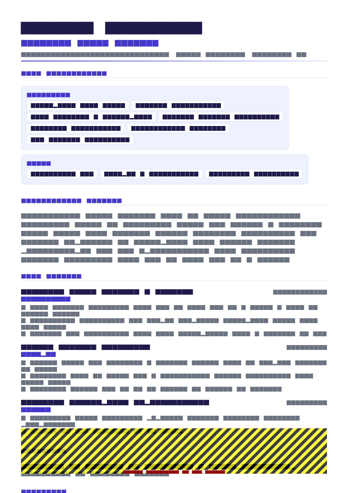

The actual problem you are solving
A hiring manager reading a career changer’s resume is doing a risk calculation, not a fairness assessment.
They have a role to fill and a shortlist of people who have already done it. You are asking them to take a chance. So the question your resume has to answer is not “is this person capable?” — it is “what evidence do I have that they can do this, and how much supervision will it cost me?”
This is why the standard career-change advice fails. A paragraph asserting transferable skills does not reduce anybody’s risk, because assertion is free and every applicant makes it. What reduces risk is work you have already done in the new discipline, however small, described concretely. Finding that evidence is most of the job.
Find your bridge evidence first
Before touching the layout, go looking for the overlap. Almost everybody has some, and almost everybody has failed to notice it because it was not in their job title.
| Look here | What you might find |
|---|---|
| Tools you used unofficially | The SQL queries, spreadsheet models, scripts or dashboards you built because nobody else would |
| Processes you improved | Automation, documentation, a workflow you redesigned — often the exact work the new role does full-time |
| Systems you administered | The CRM, LMS, EHR or ERP you became the informal expert in |
| Training you created | Materials, sessions, onboarding — instructional design in everything but name |
| Projects outside your remit | The cross-functional work you volunteered for |
| Side work | Freelance, volunteer or personal projects in the new field |
| Qualifications in progress | A certification, part-time course or bootcamp, with an applied component |
Work you did in your old job using your new skill. It proves capability, it proves initiative, and it is verifiable through a reference — which none of your competitors’ transferable-skills paragraphs are. Find yours before you write anything else.
If you genuinely have none, that is useful information: build one piece of evidence before applying rather than sending a resume that rests entirely on enthusiasm. One deployed project with users, one certification with an applied component, or one volunteer engagement in the discipline is enough to change the conversation.
Use a hybrid format — not a functional one
Reverse-chronological order puts your least relevant fact — your current job title — in the most prominent position. A functional format solves that by hiding the timeline, which recruiters read as concealment and which breaks duration filters.
The hybrid does what you actually need:
- Summary — states the pivot in three or four lines
- Relevant skills — grouped, specific to the new field
- Relevant projects or bridge work — two or three, with outcomes
- Full work history — every role, every date, compressed where it is not relevant
- Education and retraining — including the qualification that supports the move
The critical detail: every date stays visible. You are reordering emphasis, not concealing history. More on the trade-offs in resume format.
The summary does the reframing
Three moves in three lines: state what you are now, prove it, then name the advantage your old domain gives you.
Backward-looking
Experienced operations manager with 9 years in logistics, now looking to transition into a data analytics role where I can apply my analytical skills and passion for data.
Forward-looking with evidence
Operations manager moving into data analytics, with a completed analytics certificate and 18 months of applied SQL and Power BI work inside my current role. Nine years running warehouse operations gives me the domain context most analysts lack: I have owned the processes the data describes.
The last clause is the part people leave out, and it is the strongest thing on the page. You are not a weaker version of a career analyst — you are an analyst who understands the operation. Say so explicitly.
Skills as the pivot point
This section is where a reader decides whether to keep going. Lead with the new field’s tools, and be honest about depth.
- Analytics: SQL (joins, window functions, CTEs), Power BI (DAX, data modelling), Excel (Power Query, pivot models)
- Python: pandas, matplotlib — used for ad hoc analysis, not production pipelines
- Methods: cohort analysis, variance analysis, forecast accuracy measurement, A/B test reading
- Domain: warehouse operations, inventory planning, S&OP cycles, cost-to-serve
Two things that work here. The honest scoping on the Python line — naming what you have not done buys credibility for everything you have. And the domain line, which turns nine years of operations into a listed skill rather than a liability.
What does not work: a transferable-skills list of leadership, communication and problem solving. Everyone writes it, nobody can verify it. Put those in bullets where the evidence lives — see resume skills.
Translating your history without overclaiming
For each old role, keep the bullets that read as relevant in the new field and compress or cut the rest. You are not rewriting history — you are choosing which true things to say.
Written for the old field
Managed daily warehouse operations for a 60-person site, overseeing inbound and outbound flows and reporting to the regional director.
Same job, written for the new one
Built the SQL and Power BI reporting used by 3 site managers for shift planning, replacing a manual process I had previously run for four years; analysed 2 years of pick-error data to identify 4 recurring causes.
Three rules for the translation:
- Use the new field’s vocabulary for genuinely equivalent work. “Stakeholder requirements gathering” is a fair description of what you did with site managers. Inventing a project you did not run is not.
- Compress the irrelevant. A role that contributes nothing gets one line: title, employer, dates. Nobody minds a thin entry; they mind a missing one.
- Keep the scale figures. Headcount, budget and volume travel across fields intact and establish that you have operated at a real size.


Handling the credibility gaps directly
Three objections will occur to every reader. Answer them on the page rather than hoping they do not come up.
| Their objection | What answers it |
|---|---|
| “They have never done this job” | Bridge evidence, positioned above your employment history |
| “Are they serious, or just unhappy where they are?” | A completed qualification, sustained side work, or a dated project sequence — commitment shown over months, not stated |
| “Will they accept the level and the salary?” | A summary that names the role you are applying for at its actual level, so there is no mismatch to discover later |
On the second: a certification finished eighteen months ago with nothing since reads as an abandoned interest. Two projects across the last six months reads as a decision. Sequence and recency carry the signal.
Five worked transitions
Secondary teacher of 8 years moving into instructional design, with a completed UX writing course and three published e-learning modules built in Articulate Storyline. I have delivered curriculum to 400+ students a year, which is instructional design under live conditions.
Registered nurse with 10 years of bedside ICU experience moving into clinical informatics. Epic super-user and unit trainer for two go-lives, having written the handover documentation used by 40 staff. Clinically credible with the people the system is built for.
Qualified accountant moving from statutory reporting into commercial FP&A. Built the rolling 13-week cash forecast now used by the board and rebuilt three business-unit models in Power BI. Five years of close experience means my forecasts reconcile to the ledger.
Store manager of 6 years moving into SaaS customer success. Ran a £4M turnover site with a 22-person team and a 94% customer satisfaction score, and completed a HubSpot CS certification. Comfortable owning renewal conversations and escalations.
Logistics and maintenance manager with 12 years of military service, transitioning to civilian supply chain. Accountable for a $14M equipment inventory and a 34-person team across 3 sites, with six consecutive audits passed with no material findings. Active security clearance.
Every one of these follows the same three-part shape, and every one names a specific piece of evidence rather than a quality.
Seniority, salary and the honest version
Worth stating plainly, because optimistic advice here wastes people’s time. A career change usually involves a step back in title, and often in pay, at least for the first move. Two factors control how large that step is:
- Domain overlap. Changing function inside an industry you know is a much smaller step than changing both at once. If you can pivot function first and sector later, do.
- Bridge evidence. The more real work you can show, the closer to your existing level you can enter.
What is not lost: your judgement, your experience of delivering things, and your ability to handle stakeholders. Career changers with real prior seniority typically progress faster than genuine entry-level peers once they are in, because only the domain knowledge was missing. Price the first move accordingly and do not anchor on it.
Templates

Skills Based resume template
Skills Based is the natural fit for a hybrid career-change resume: competencies lead, the full dated history sits below intact, and nothing is hidden. ATS 85, free.
Use this template in NextCV| Template | ATS score | Price | Best for |
|---|---|---|---|
| Skills Based | 85 | Free | Hybrid layout with competencies above a full dated history |
| Competency Groups | 82 | Premium | Grouped competency clusters for a wider pivot |
| ATS Pro | 98 | Free | Maximum parsing safety when the portal is strict |
| Veteran Transition | 91 | Premium | Military to civilian transitions specifically |
| Pure White | 95 | Free | Senior changers who want a restrained, minimal document |
Checklist
- Bridge evidence identified before the resume was restructured
- Hybrid format: skills and relevant projects above a full dated history
- Every role dated — nothing hidden or undated
- Summary states the pivot forward and names your domain advantage
- Skills section leads with the new field’s tools, scoped honestly
- Two or three relevant projects with real outcomes
- Old roles compressed, scale figures retained
- No transferable-skills word list
- Retraining or certification dated and recent
- Target role and level named, so there is no mismatch later
Frequently asked questions
What resume format is best for a career change?
A hybrid: a substantial skills block and two or three relevant projects above a complete, dated employment history. It leads with relevance while keeping the timeline verifiable.
Do not use a functional resume that hides or undates your employment. Recruiters recognise it immediately as concealment, and duration filters cannot compute your experience without per-role dates.
How do I write a career change resume with no experience in the new field?
You almost always have more than you think. Look for work in your current role that used the new skill — the reports you built, the process you automated, the system you administered, the training you designed. That is bridge evidence and it is the strongest thing you can lead with.
If genuinely none exists, build one piece before applying: a deployed project, a completed certification with an applied component, or a volunteer engagement in the new discipline.
Should I explain why I am changing careers on my resume?
Briefly, in the summary, and framed forward rather than backward. One clause is enough: what you are moving into, and what your previous domain gives you that a standard candidate lacks.
Do not explain what you disliked about your old field. Save the fuller narrative for the cover letter and the interview, where you can read the room.
Are transferable skills enough to change careers?
Listed transferable skills are almost never enough, because everyone claims the same four and none of them are verifiable. Demonstrated transferable work is a different matter.
The distinction: “strong analytical skills” proves nothing, while “built the SQL and Power BI reporting three site managers use for shift planning” proves the same claim and cannot be copied.
Will I have to take a pay cut or a step down in title?
Often, at least initially — and it is worth being clear-eyed about it rather than surprised. What reduces the size of the step is domain overlap: moving into analytics within the industry you already know is a much smaller drop than changing both function and sector at once.
Your prior seniority is not wasted. Judgement, stakeholder management and delivery experience typically move you up faster than a true entry-level peer once you are in.
Should I keep unrelated jobs on my career change resume?
Keep them, but compress them. A complete history with visible dates is what stops a reader wondering what you are hiding; a full set of bullets on work you are leaving behind wastes the page.
Give older or unrelated roles one line of title, employer and dates, plus a single bullet only where it carries something genuinely relevant — scale, budget, people or the domain itself.
NextCV Editorial
NextCV is an AI resume builder by Empire Softtech. We publish the same guidance our in-app ATS analyser is built on — seven weighted sections, 29 templates scored from 72 to 98, and no formatting advice we would not follow ourselves.